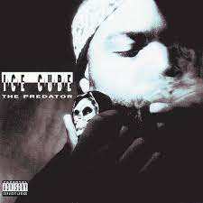
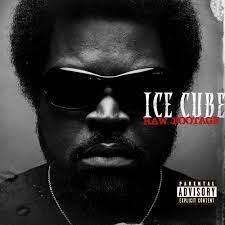
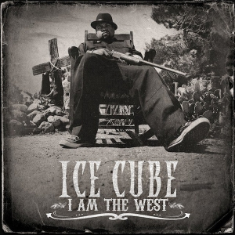

- home
- mais sobre
- mais músicas
Pequena biografia de ice cube:O'Shea Jackson Sr., mais conhecido pelo seu nome artístico Ice Cube, é um rapper, produtor musical, ator, escritor, comediante, produtor cinematográfico e diretor norte-americano. Ele iniciou sua carreira em 1984 como membro do grupo C.I.A. e depois entrou para o grupo de gangsta rap N.W.A em 1986.
  